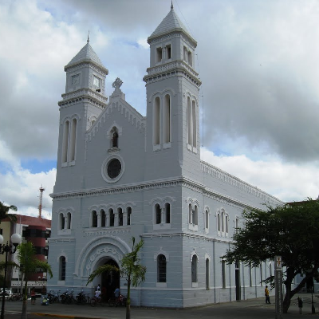
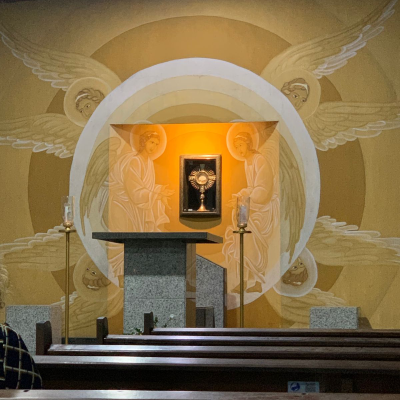

A Catedral de Nossa Senhora da Conceição, também conhecida como Sé de Sobral, é o principal
templo católico da cidade e sede da Diocese de Sobral. Construída em 1778 no estilo rococó, com
acréscimos posteriores, é um dos bens históricos e religiosos mais importantes da região norte
do Ceará. O local oferece missas diárias, confissões e é um espaço de oração, reflexão e
encontro com a fé católica.
A Catedral sempre é assunto. O que será que estão falando a respeito no
X?
O Santuário São Francisco

O Santuário São Francisco de Assis é um belo templo franciscano localizado no centro de
Sobral.
Com arquitetura atraente e acolhedora, oferece missas diárias às 6h e 17h30 de segunda a
sexta,
além de confissões regulares. Durante os festejos de São Francisco, o local é lindamente
decorado, tornando-se um ponto de devoção e paz para os fiéis católicos.
Veja quais as melhores avaliações sobre o Santuário no
Tripadvisor.
Na Comunidade Católica Rainha da Paz

A Comunidade Católica Rainha da Paz é uma família eclesial mariana nascida em 28 de fevereiro de
1989, em Sobral, a partir de um grupo de oração da Renovação Carismática Católica na Igreja de
Nossa Senhora do Patrocínio. Seu carisma é adorar Jesus Eucarístico como almas esposas e
evangelizar exercendo maternidade espiritual, gerando filhos e missionários para igreja de
Cristo. Com sede na Rua Coronel
Estanislau Frota, 535 (Centro), oferece adoração perpétua ao Santíssimo Sacramento desde 1995,
congressos de cura e libertação, eventos para jovens e famílias, e projetos como "Queridos
Filhos" (visitas domiciliares com o terço e mensagens de Nossa Senhora), Éfeta (preparação
da crisma nas escolas). É um lugar de intensa vida espiritual, retiros,
shows de evangelização e missões em vários estados e países — um verdadeiro oásis de paz e
conversão na nossa cidade!
Fique por dentro dos eventos e da adoração ao vivo no site oficial ou veja o que estão
compartilhando no
X.